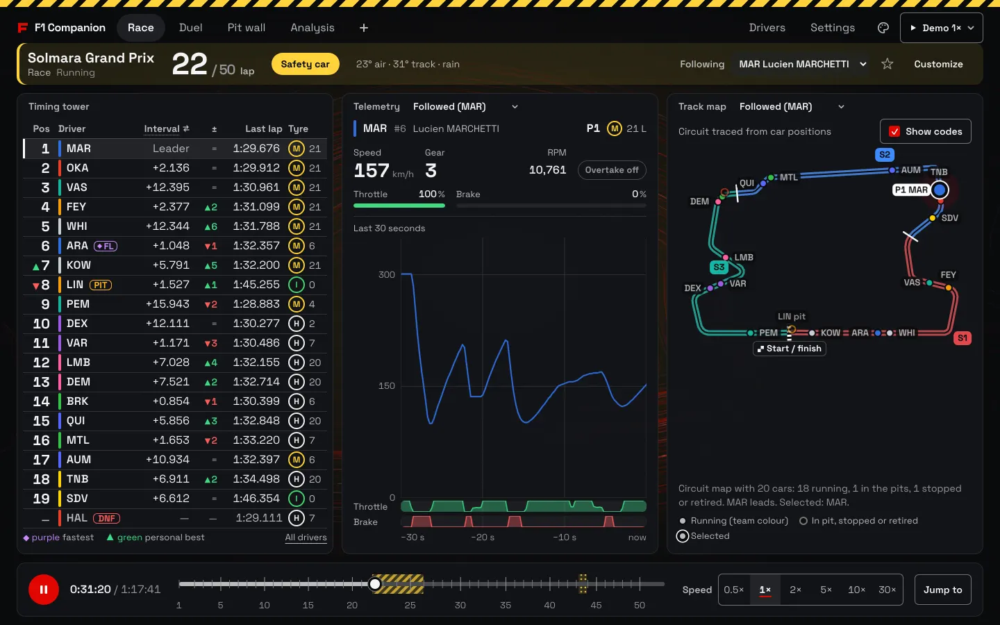
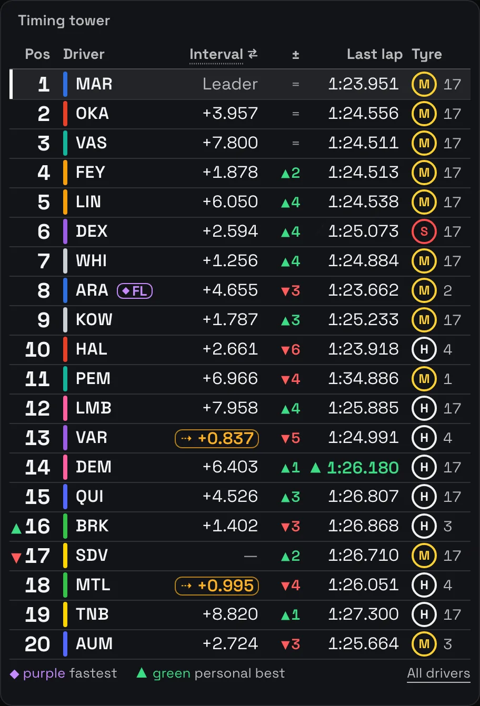
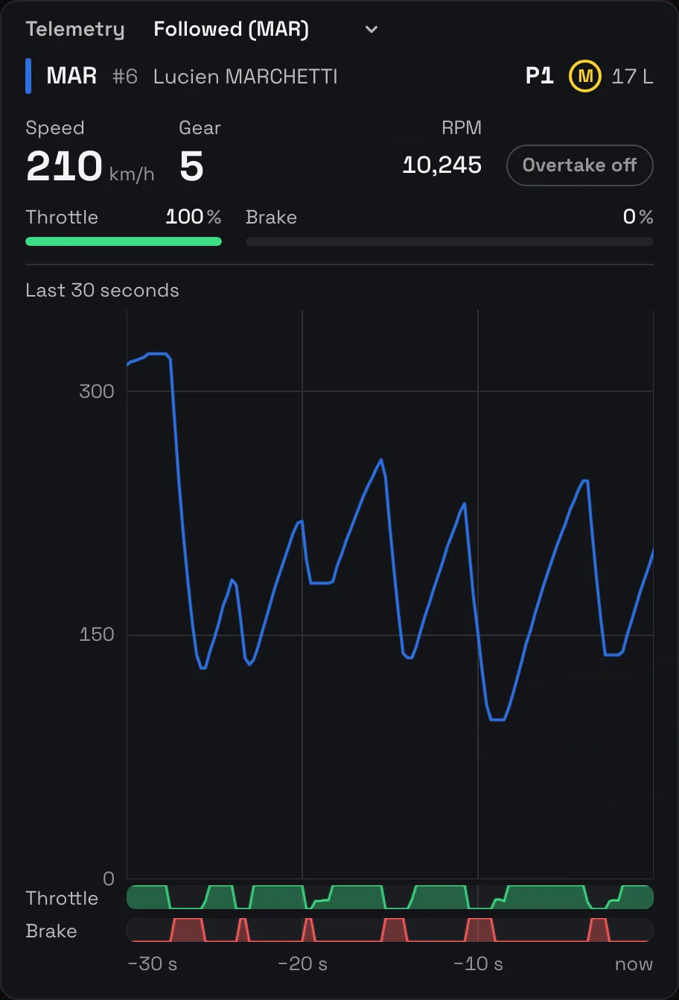
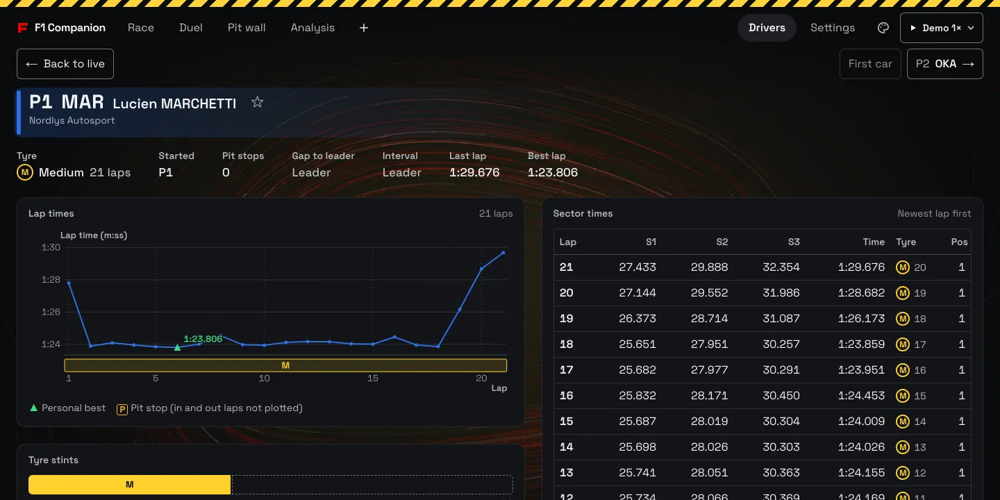
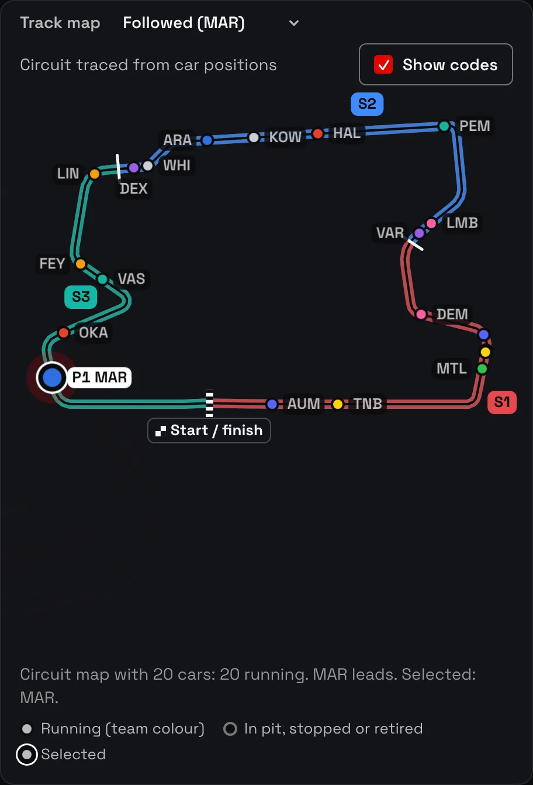
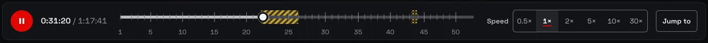
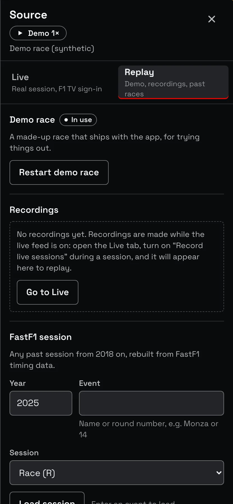

Your race.
Every detail.
Live.
F1 Companion is a race-day second screen I built and run myself. Timing tower, per-driver telemetry, a track map and race control come off F1's live timing feed and stream into the browser. When there's no race on, it replays a recording, a past session or a synthetic demo race.
Python · FastAPI · server-sent events · Next.js · MIT license

This page is one lap
Speed, throttle and brake for one lap, taken from the app's own trace endpoint. Each corner is a section below. Pick one to jump there.
Live timing and standings
Twenty cars with interval or gap to the leader, last lap, tyre and age, and places gained since the start. Purple and green mark fastest and personal-best laps, with a glyph as well as a colour. Cars within a second of each other get a battle marker.
In qualifying the tower switches to Q1, Q2 and Q3, with a cut line and the drop zone.

Per-driver telemetry
Follow any car for speed, gear, RPM, throttle and brake, with a rolling 30-second chart. Driver pages add lap-time history, a sector table, tyre stints and speed traces of one lap against another.


A track map traced by the cars
No circuit geometry ships with the app. It draws the track from car positions once a car completes a clean lap, then marks sectors 1 to 3 and the start/finish line. Every car moves in its team colour, and cars in the pits or out of the race show as hollow rings.
The small map in the margin is that same traced outline, following your place on this page.

Race control, as it's sent
Flags, safety cars, penalties and deleted lap times arrive as the FIA sends them. Alerts can be set to off, favourites only or everyone. When the track status changes, the session header turns yellow or red, so you notice it from across the room.
- L22Double yellow in track sector 16
- L22Car 3 (HAL) stopped at turn 8
- L22Safety car deployed
- L22Lapped cars will not be allowed to overtake
- L23Car 3 (HAL) retired, noted by the stewards
- L25Safety car in this lap
- L31Car 17 (OKA) time 1:24.437 deleted, track limits at turn 10
- L35FIA stewards: 5 second time penalty for car 17 (OKA), track limits
Replay and past sessions
The slowest corner on the lap, which suits it. Replay anything at 0.5× to 30×, pause, scrub, or jump straight to the safety car. Past sessions from 2018 onwards load through FastF1. Turn on recording during a live session and it's saved as JSON Lines, ready to replay.


How it works
One Python process owns the feed. Sources are swappable, and nothing downstream knows which one is running. The browser gets a full snapshot, then small patches.
-
Data sources
- F1 live timing SignalR Core
- Recordings .jsonl.gz
- Past sessions FastF1
- Demo race generated
-
Python backend
- Decode
.ztopics base64 raw-deflate - Deep merge index-keyed lists
- Derive lap history, traces, circuit outline
- Recorder tap JSON Lines
- Decode
-
FastAPI + SSE
GET /api/stream- Snapshot first, on every connect
- Patches coalesced every 200 ms
- Status events
-
Next.js frontend
- Reconnecting
EventSource - Same merge rules, in TypeScript
- Tower, telemetry, map, alerts
- Themes, favourites, TV delay
- Reconnecting
When the connection drops. Reconnects back off exponentially with jitter. A socket that goes 30 s without a frame is recycled, and every reconnect starts again from a fresh snapshot rather than trusting stale patches.
How it's tested. pytest covers the decoder, the merge, replay timing on a fake clock, reconnecting against a fake SignalR server, and an end-to-end run of the real server reading its own SSE stream. Vitest covers the TypeScript merge and the stream wrapper. Playwright scripts check every page at 390 and 1440 px.
Demo
There is no hosted version. The backend keeps a long-lived connection to F1, and F1's feed is for personal use only. So here is the real app playing the bundled demo race at 5×: a car stops at turn 8, double yellows, then the safety car.
Run it yourself
The demo race needs no network and no account. You'll need Python 3.11+ and Node 20+.
Install
git clone https://github.com/taran-duba/f1-companion
cd f1-companion
python3 -m venv .venv
.venv/bin/pip install -r backend/requirements.txt
cd frontend && npm installTerminal 1: backend, on the demo race
cd backend && ../.venv/bin/python -m f1live serveTerminal 2: dashboard
cd frontend && npm run devOpen localhost:3000. Space plays and pauses, ← and → jump 10 seconds. To go live, run the backend with F1_SOURCE=live or pick Live timing from the source menu.
What needs an F1 TV account
Bring your own credentials. The app never tries to get a token for you, and nothing is hosted.
| Feature | Demo and recordings | Live, no account | Live, F1 TV token |
|---|---|---|---|
| Timing tower and standings | Works | Works | Works |
| Race control, session, weather | Works | Works | Works |
| Car telemetry | Works | Needs token | Works, untested* |
| Track map and car positions | Works | Needs token | Works, untested* |
* Telemetry and positions come from CarData.z and Position.z, which F1 only sends with a subscription token. The token path is written but untested, because no subscription was available while building. Past sessions through FastF1 need an F1 TV login (F1_USERNAME and F1_PASSWORD).
Known limitations
- The map appears after a car completes a clean lap, because it's traced, not bundled.
- One user and one active source. Switching source changes it for every open browser.
- No authentication on the API. It binds to
127.0.0.1unless you say otherwise. - The demo can't reproduce everything, such as qualifying or red-flag restarts. Those paths are covered by unit tests only.
Built with
- Python 3.11+
- Ingest, decoding, state store, the demo race generator
- FastAPI and uvicorn
- REST endpoints and the SSE stream
- websockets, httpx
- SignalR Core client and negotiate
- FastF1
- Past sessions, converted into the live message format
- Next.js 16, React 19
- The dashboard, App Router
- Tailwind CSS 4, TypeScript
- Themeable tokens with contrast checks
- pytest, Vitest, Playwright
- Unit, end-to-end and layout checks